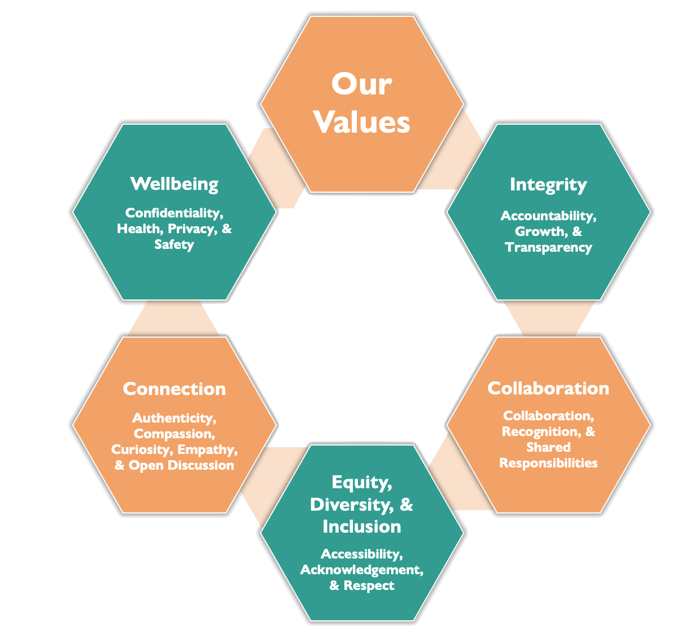

Open Science Student Support Group
OSSSG (Oh! - Triple S – Gee) was founded in 2020 in the Department of Psychology, University of Calgary, by a group of graduate students eager to learn about different open science practices and support each other in implementing them in our own research.
Our Vision Statement
We aim to develop a thriving student-led community that is dedicated to the promotion, normalization, and practice of open and inclusive scientific research.
Our Values

How We Uphold Our Values
OSSSG is committed to upholding our values. Alongside the following elaborations explaining each value, a group of OSSSG coordinators developed an extensive list of behaviours to help us stay accountable.
Our Organizational Structure
Our group structure is based on a decentralized organizational structure. All members are invited and encouraged to participate in decision making in the group and to plan events and activities for this group based on their own interests and availability. A team of organizers fulfill support roles to help members realize their ideas, facilitate decision making, maintain the basic structure of the group, and keep everything running smoothly.
- Promotions: Disseminates materials and information, promote events, engages members
- Event Coordination: Provides support and guidance to event planners
- Tech Support: Provides support for members to navigate and use or digital and online platforms and keeps our platforms up to date
- Community: Fosters a welcoming atmosphere, moderates online spaces, and engages the membership to uphold of our group values
- Admin: Facilitates administrative work of the group such as scheduling meetings, maintaining group documentation, tracking group expenditures, and supporting organizer role transitions as necessary
Everyone who joins our Slack workspace or email list is considered to be a member of the group. As a member, you are invited to all general meetings and activities of the group, have access to the resources and shared knowledge/experience of our group, and have the chance to participate in group projects and the shaping of our group. These are all just optional: apart from following our community guidelines, there are no expectations of members, so you are free to engage how much you want and are able to.
For more details on our organization structure, see: https://osf.io/acgyh